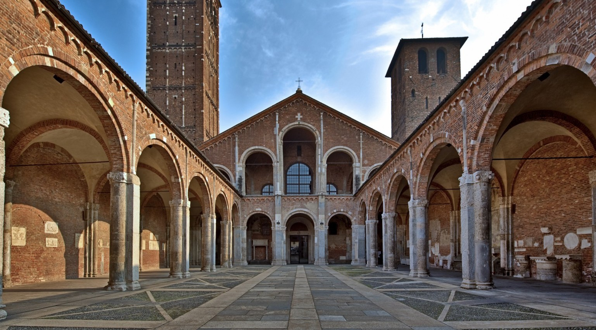

Il Romanico è la fase della storia dell’arte che parte dalla fine del X secolo e che porta numerose innovazioni non solo a livello artistico, bensì anche a livello sociale. Anzitutto, il concetto di città acquista sempre più valore fin dall’inizio di questo periodo. In questa fase storico artistica, le cattedrali divengono centri di cultura, potere, sapere, e per la loro costruzione vengono spesso richieste molte risorse, al recupero delle quali partecipano attivamente i cittadini. È inoltre in questo periodo che vediamo per la prima volta cantieri che si protraggono per decenni e, talvolta, addirittura per secoli.
Nell’architettura romanica, troviamo per la prima volta la “volta a crociera”, ovvero due volte a botte disposte a croce che vanno a formare delle nervature che prendono il nome di “costoloni”. Gli spazi presenti tra i quattro costoloni che vanno a formarsi prendono il nome di “vele”. Molte chiese, come la basilica di Sant’Ambrogio, sfruttano la “tecnica delle moltiplicazione delle campate”, ovvero una tecnica di costruzione che prevede le navate laterali di larghezza una campata, mentre la campata centrale sarà larga due campate.
Quanto alla pittura, essa presenta una forte dipendenza al contesto architettonico, anche se i mosaici e gli affreschi sono i tipi di pittura maggiormente utilizzati. Nella pittura stessa, vi è un chiaro segno di influenza dell’arte bizantina, che si denota dall’accentuato grafismo delle figure, dal senso della simmetria, dalla gestualità e dagli sguardi dei personaggi. L’arte romanica, nonostante i molti punti in comune, genera grosse differenze stilistiche in base all’area geografica.